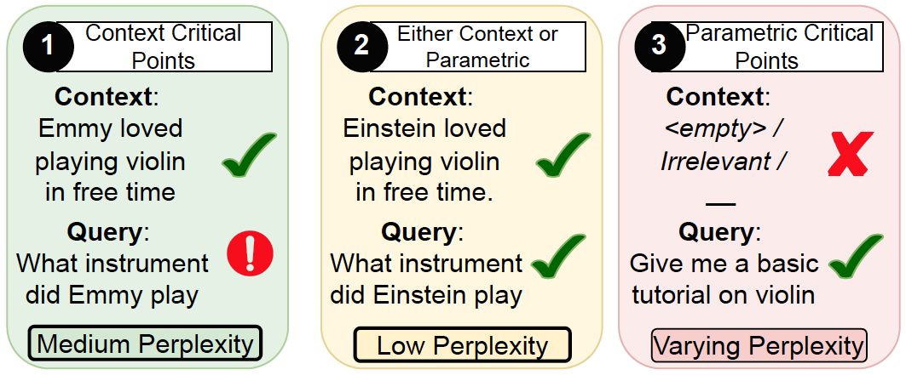

TLDR

- LLM's are instruction finetuned to improve their ability to follow the user instruction and input context.
- However, state-of-the-art models still struggle to rely on the context, especially when it is not aligned with parametric knowledge. Why does this happen even after instruction finetuning?
- We observe an intriguing phenomenon: context reliance infact decreases with instruction finetuning, despite an initial expected increase. This decrease happens, while the performance on standard benchmarks keeps on increasing. Rather it starts quite early into the training.
- This is quite surprising as instruction finetuning is infact supposed to improve context reliance. We call this as context-parametric inversion.
Is there a Simple Explanation for this?
Negating some simple hypotheses

- Can this drop in context reliance with finetuning be attributed to memorization of facts? We observe that even when removing any overlap between finetuning and eval data, we observe a drop in context reliance.
- Model learns to rely on parametric knowledge broadly well outside the exact facts seen during finetuning.
- Another hypotheses could be lack of enough context based answering datapoints in instruction finetuning dataset.
- However, even when finetuning on a context-only subset of Alpaca, there is a drop in context reliance (red-curve).
A closer look at the Instruction Finetuning Datasets

- Context-Critical Datapoints: Provide key information needed to answer user query.
- Non-Context Critical Datapoints: Context overlaps with model's knowledge from pretraining.
- Parametric Datapoints: General fact recall datapoints.
What causes context-parametric inversion?
Both empirically and theoretically, we show that this drop in context reliance is due to the presence of non-context critical datapoints. In the early stages of training, context-critical points have a high loss, and drive the attention towards the context. In the later stages, the model leverages its pretrained knowledge to further reduce the loss on the non-context-critical points, shifting the attention away from the context.Can Counterfactual Data Augmentation Fix Everything

Our theoretical analysis naturally leads us to some potential mitigation strategies beyond filtering non-context critical datapoints. These strategies give some limited but insightful results.
- Counterfactual data augmentation, a widely used approach, improves context reliance only on tasks similar in type to the augmented data.
- For example, adding entity substituted QA counterfactual data improves performance on QA tasks only and doesn't generalize to other kind of context-parametric conflicts.
- QK Finetuning: Regularizing by updating only the "Query" and "Key" matrices enhances context reliance on certain tasks but may hurt performance on standard benchmarks, as value matrices can learn additional facts during finetuning.